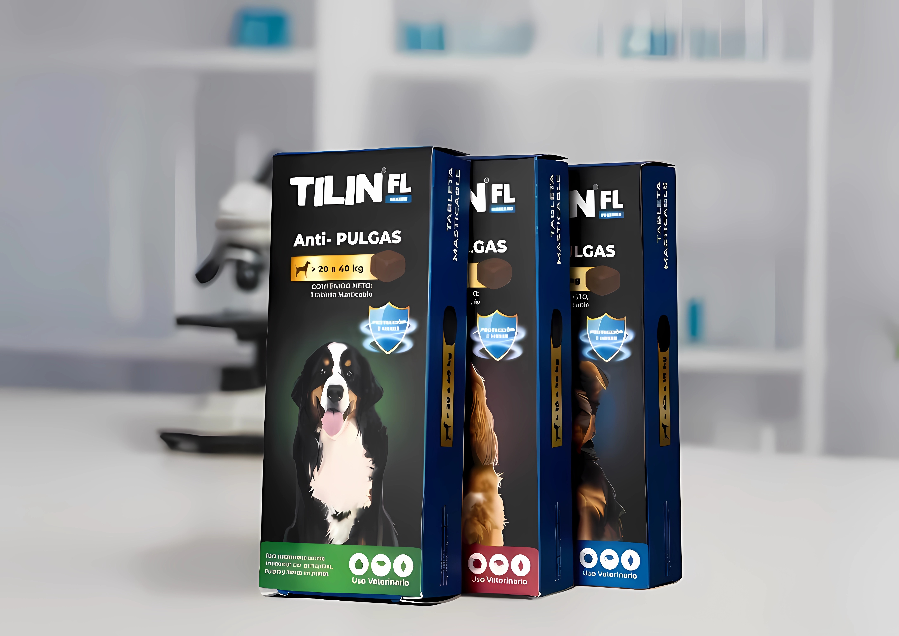
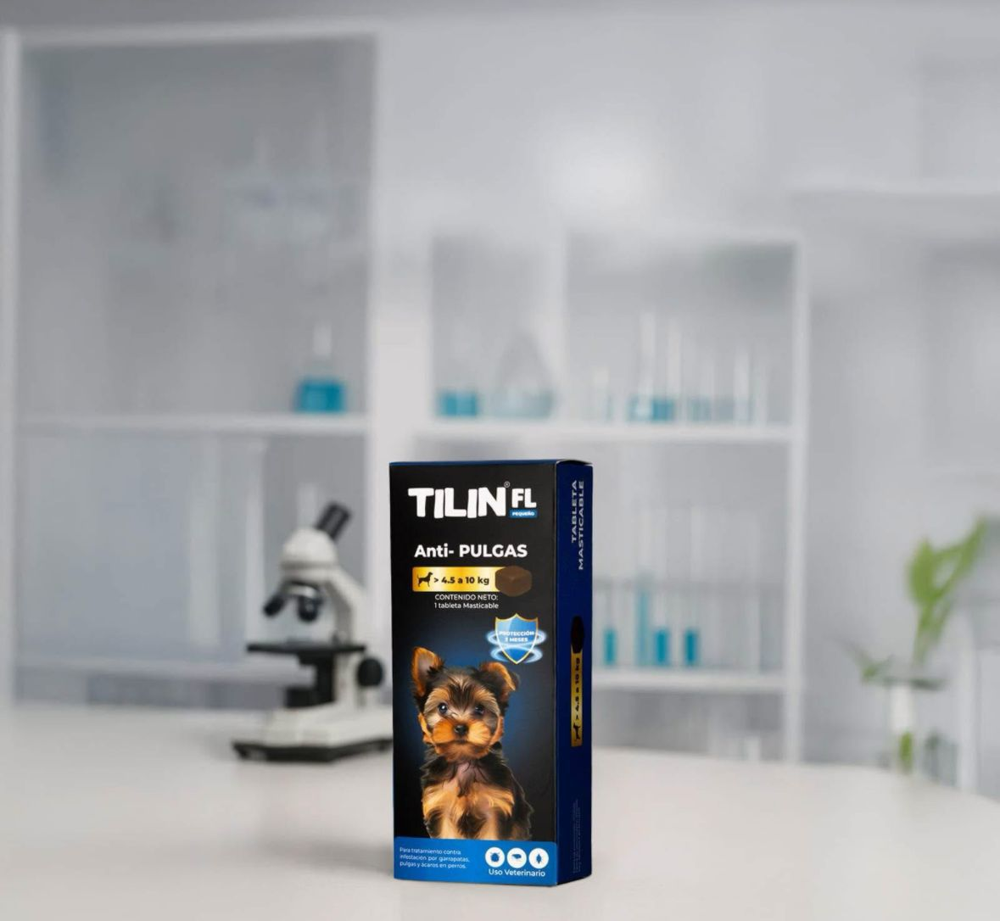
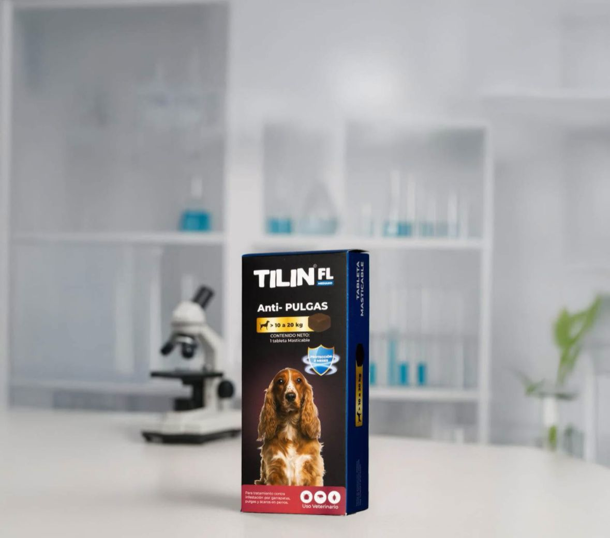
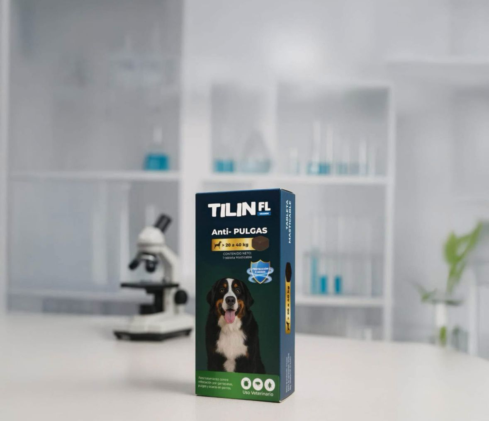
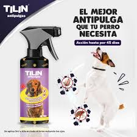

★★★★★
"Increíble. Mi perro tenía muchas pulgas y en menos de una semana desaparecieron por completo. Llevo 2 meses y no ha vuelto ninguna. Totalmente recomendado."
Compra en docena y ahorra hasta S/120 Ver oferta →

Protección veterinaria premium
Tilin es la pastilla masticable antipulgas, antigarrapatas y ácaros que protege a tu perro por 3 meses continuos. Sin inyecciones. Sin estrés.
Una pastilla



Pastilla masticable antipulgas, antigarrapatas y ácaros. Una sola dosis protege a tu perro durante 90 días, según su peso.
Ventajas
Ventajas que lo hacen único en el mercado.
Sin pipetas ni sprays. Fácil de dar, igual que una golosina.
Una sola dosis protege contra pulgas, garrapatas y ácaros por 90 días.
Formulada por el Dr. Augusto Durand con más de 25 años en salud animal.
Disponible para perros de 4.5 a 40 kg. Dosis exacta según el peso.
Actúa sistémicamente: el parásito muere al entrar en contacto con la piel.
Marca 100% peruana con distribución directa al consumidor.

El creador
Profesional peruano con más de 25 años de experiencia en el mundo empresarial, especializado en el desarrollo de productos para la salud animal y el control de plagas.
Creador de toda la marca Plop: Plop Forte, Tilin Antipulgas, Xtrim, Shampoo Pillin, Curabicheras, MATAX y muchos más. Su compromiso con la innovación y la ciencia lo llevó a desarrollar Tilin, la solución antiparasitaria más práctica y duradera del mercado peruano.
Catálogo Tilin
Envío a coordinar por WhatsApp. Precios en soles (S/).
Opiniones
Familias que ya protegen a sus mascotas con Tilin.
"Increíble. Mi perro tenía muchas pulgas y en menos de una semana desaparecieron por completo. Llevo 2 meses y no ha vuelto ninguna. Totalmente recomendado."
"Es una pastilla que mi perro se come sin problema mezclada con la comida. Antes con las pipetas era un drama. Muy práctico y efectivo."
"Compré el PACK 360 y es excelente. Protección completa interna y externa. El Dr. Durand sabe lo que hace, se nota la diferencia con otros productos del mercado."
"Tengo 3 perros de distintos tamaños y compro las 3 versiones. Calidad constante, mis mascotas están sin pulgas hace meses. Super recomendado para hogares con varios perros."
"Mi golden retriever es grande y siempre le llegaban garrapatas del parque. Con Tilin 20-40kg desaparecieron por completo. Ya compré la docena para tener stock."
"Usé el MATAX para cucarachas en mi cocina. En 48 horas no quedó ninguna. Llevaba semanas con el problema y otros productos no funcionaban. Este sí."
"Compro en media docena para ahorrar. El precio por unidad baja bastante y la calidad es la misma. Mi perrita de 8 kg lleva 6 meses sin ni una pulga."
"El Dr. Plop me recomendó personalmente el PACK 360 para mi perro que tenía parásitos internos y externos. Resultado excelente. Muy buen servicio y atención por WhatsApp."
"El MATAX para hormigas funcionó perfecto en mi jardín. Apliqué en las esquinas y en 3 días desaparecieron las colonias. Llevo un mes sin ver ni una. 100% efectivo."
"Mi veterinaria me recomendó Tilin. Quedé impresionada con los resultados. Mi perro saltaba de alegría y ya no se rasca. Definitivamente no vuelvo a las pipetas."
"Excelente relación precio-calidad. Compré la docena para mi negocio de peluquería canina y mis clientes están muy contentos. Los perros llegan y salen protegidos."
"Tenía miedo de darle una pastilla a mi perro por primera vez pero se la comió solita. Sin drama, sin estrés. Y lo mejor: 3 meses de protección total. No lo cambio por nada."
"Compré para mis dos bulldogs. El de 22 kg y el de 31 kg. Los dos perfectos, sin pulgas ni garrapatas. La entrega fue rápida y el producto llegó bien embalado. Volveré a comprar."
En redes
En desarrollo
El Dr. Augusto Durand sigue innovando. Actualmente está desarrollando nuevos productos contra cucarachas y hormigas, un shampoo antipulgas y un spray antipulgas para perros, y otros productos orientados a la salud y el cuidado de tus mascotas.
¡Próximamente disponibles para que sigas protegiendo a quienes más quieres!

Hablemos
Contáctanos directamente por nuestras redes.